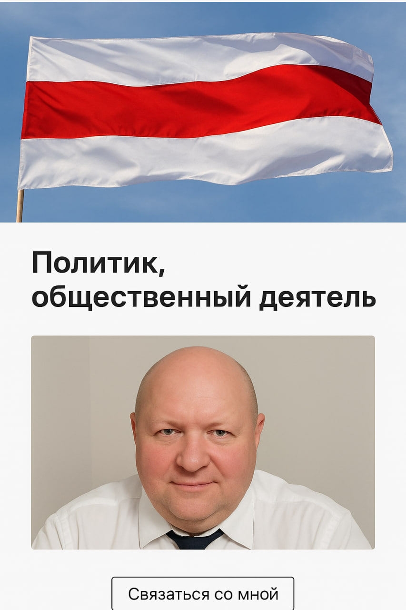

❤️
❤️
Юрий Чудинович
22.06.2021Белорусский общественный активист, предприниматель и блогер из Барановичей. Автор канала «Точка невозврата». Осужден режимом на 4 года за правду. Символ несокрушимой воли.
⚙️
⚙️
Партия «ДЕЛ»
Политическая сила нового времени, основанная Юрием Чудиновичем в ИВС. Мы выступаем за полную смену системы, возврат к Конституции 1994 года, свободную экономику и экологическую безопасность.
🛡️
🛡️
Фонд «Честный политзек»
Наша миссия — чтобы ни один политзаключенный не остался один на один с бедой. Мы учреждены 16.12.2025 для оплаты адвокатов, сбора передач и поддержки семей репрессированных героев.
Поддержать фонд🤝
🤝
Комитет солидарности репрессированных
16.12.2025Глобальная сеть солидарности. Мы объединяем диаспоры, политиков и активистов по всему миру для международного давления на режим и освобождения всех незаконно осужденных граждан Беларуси.
CHUDO
KRC20
Криптовалюта CHUDO
16.12.2025CHUDO (KRC-20) — это не просто токен в сети Kaspa. Это инструмент финансовой свободы, неподвластный санкциям и блокировкам. Валюта солидарности и поддержки демократического будущего.
📜
📜
Смарт-контракт CHUDO
Transfer
Tick: CHUDO
Amount: 1,000
From: kaspa:qpg0zyjk...500wwkau
To: kaspa:qzjf2nf0...dz0red2c
Protocol: KRC-20
OP: transfer
OP Score: 3050023200000
Reveal Fee: 0 KAS
TX State: Confirmed
OP Created at: 16.12.2025, 22:17:44
⚖️
⚖️
Демократические силы Беларуси
16.12.2025Консолидация всех здоровых сил общества. Правозащитная организация, созданная для защиты прав человека, разработки реформ и подготовки кадрового резерва новой свободной страны.
PKO Bank Polski (PLN/EUR)
Card: 4251 2513 6480 1214 (до 11/30)
SWIFT: BPKOPLPW
IBAN (PL)
PL98 1020 1185 0000 4502 0419 7976
Revolut (Multicurrency)
Card: 4165 9871 1998 8302 (до 10/30)
SWIFT: REVOLT21 | Corr: CHASDEFX
Revolut Bank UAB, Konstitucijos ave. 21B, Vilnius
IBAN (International)
LT81 3250 0653 6173 6755
Криптовалюта
⚠️ Переводите только в указанной сети!
Bitcoin BTC Network
bc1qp3gzyyknnlzcfll6yks4lezjfdaustan6w64e9
USDT TRC-20 (Tron)
TQMo2KNXE8n961ddNFfJdcH4ZixVmMeU8U
USDC Solana
FKyHQKi7st4SWQQoKoEJ4zSSyX54AFcnykEHwPjAqYNJ
ETH Arbitrum
0xb6fd3908EB2BC7a428Aa905dC7Dab42884AEf320